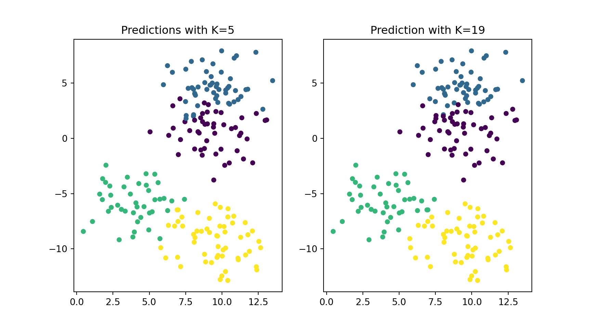
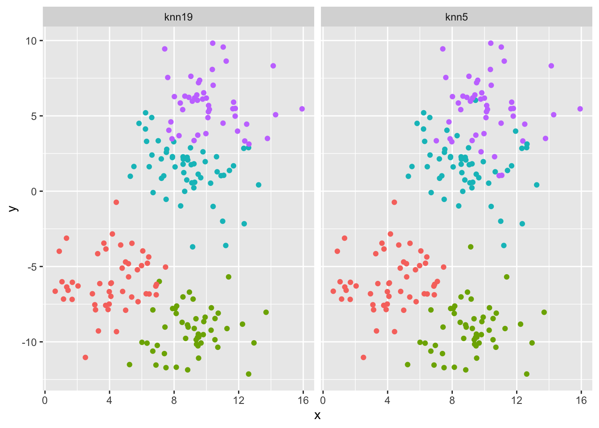

x = [4, 5, 10, 4, 3, 11, 14 , 8, 10, 12]
y = [21, 19, 24, 17, 16, 25, 24, 22, 21, 21]
classes = [0, 0, 1, 0, 0, 1, 1, 0, 1, 1]
import matplotlib.pyplot as plt
plt.scatter(x, y, c = classes)One of the very first ML algorithm (because it’s ease) is KNN. In this post, we’ll learn about KNN using Python (with the Sklearn package) and using R with the tidymodel framework.
Introduction
KNN stands for K Nearest Neighbor.
KNN is not really a machine learning techniques in the sense that it trains a model. In the case of KNN, there is no training. We are waiting for test data to see what label (or value) will the the new data will get. We then say that KNN is a lazy learner (as opposed to eager learners like SVM or RF). Nonetheless, it is a supervised ML algorithm that can be used for both classification and regression. The intuition behind the model is that observations that are closed to each other (close in terms of distance in a hyperplane) have similar labels (classification) or values (regression).
As mentioned, there is no training phase when using KNN. Instead, there is only prediction.
We take an observation and check the K observations next to it. We check the label of the K observations next to our data to be labeled and using a majority voting system we assign the label. For regression, it calculates the average or weighted average of the target values of the K neighbors to predict the value for the input data point.
Looking at the above image, we can see that, using k=3, the 3 observations closest to the star (our data to be classified) are all brown circle. Hence we should classify the star as a brown circle instead of an orange rectangle.
Scaling
Because KNN use distance, it is important to scale the data as a pre-processing steps. Otherwise, features with big scale (let’s say price) will skew the distance against features with lower scale (let’s say percentage).
Using probability terminology, one can say that KNN method is a direct attempt at approximating the conditional expectation using actual data.
In the case of regression, the estimation function could be written as \[\hat{f}(x) = \text{Average } [y_i|x_i \in \mathcal{N}_k(x)]\] where \(\mathcal{N}_k (x)\) is the neighborhood of x containing the k-closest observations.
In the case of classification, we use a majority voting system.
Pros-Cons of KNN
Pros
- Easy to understand intuition, mathematics (Euclidean Distance)
- KNN is non-parametric. It’s not making any assumptions on the the type of distribution of the data
- only one parameter to tune
Cons
- non-efficient in terms of memory
- non-efficient on speed of execution with new data
- not suitable for high dimensional data
- not suitable for big data sets
Starting example with simple data
Now let’s create a KNN object and a new point
from sklearn.neighbors import KNeighborsClassifier
knn = KNeighborsClassifier(n_neighbors = 3)
knn.fit(list(zip(x, y)), classes)KNeighborsClassifier(n_neighbors=3)In a Jupyter environment, please rerun this cell to show the HTML representation or trust the notebook.
On GitHub, the HTML representation is unable to render, please try loading this page with nbviewer.org.
KNeighborsClassifier(n_neighbors=3)
new_x = 3
new_y = 20
new_point = [(new_x, new_y)]
prediction = knn.predict(new_point)
plt.scatter(x + [new_x], y + [new_y], c = classes + [prediction[0]])
plt.text(x = new_x-1, y = new_y-1, s = f"new point, class:{prediction[0]}")library(dplyr)
library(ggplot2)
df <- tibble(x = c(4, 5, 10, 4, 3, 11, 14 , 8, 10, 12),
y = c(21, 19, 24, 17, 16, 25, 24, 22, 21, 21),
classes = as.factor(c(0, 0, 1, 0, 0, 1, 1, 0, 1, 1)))
ggplot(df, aes(x = x, y = y, color = classes)) +
geom_point() +
theme(legend.position = 'none')Using the tidymodel framework, we are first creating a recipe, then applying the transformation to the original data. We then apply these transformation to the new points as well. Using ‘parnsip’, we create the KNN object.
library(recipes)
library(parsnip)
df_rec <- recipe(classes ~ ., data = df) |>
step_normalize(-classes) |>
prep()
df_juiced <- juice(df_rec)
new_point = tibble(x = c(3), y = c(20))
df_baked <- bake(df_rec, new_data = new_point)
knn_model <- nearest_neighbor(neighbors = 3) |>
set_engine('kknn') |>
set_mode('classification')
knn_fit <- knn_model |> fit(classes ~., data = df_juiced)
knn_fitparsnip model object
Call:
kknn::train.kknn(formula = classes ~ ., data = data, ks = min_rows(3, data, 5))
Type of response variable: nominal
Minimal misclassification: 0.1
Best kernel: optimal
Best k: 3# evaluate the model now on new data
prediction <- predict(object = knn_fit, new_data = df_baked)
new_point_pred <- bind_cols(new_point, prediction) |>
rename(classes = .pred_class)
ggplot(data = bind_rows(df, new_point_pred),
aes(x = x, y = y, color = classes)) +
geom_point() +
geom_text(data = new_point_pred,
mapping = aes(label = paste0('new point, class:', new_point_pred$classes)),
nudge_x = 0.9, nudge_y = -0.2)Example with synthetic data
In this example, we create a data set of a 1000 observations (using numbers taken from a normal distribution with a sd of 2.). We’ll make 4 clusters of 250 observations. Because the data comes from a normal distribution, there is no need to scale them this time. We’ll then do a usual split 80-20 % for training and testing set. And we’ll test our data using either K = 5 or K = 19. And then check the accuracy score.
from sklearn.datasets import make_blobs
from sklearn.neighbors import KNeighborsClassifier
from sklearn.model_selection import train_test_split
# create our synthetic data
X, y = make_blobs(n_samples = 1000, n_features = 2,
centers = 4, cluster_std = 2,
random_state = 4)
# visualizing the dataset
plt.scatter(X[:,0], X[:,1], c = y, s = 20)Splitting our dataset into training & testing + running KNN on the data
# spliting our data into training and testing
X_train, X_test, y_train, y_test = train_test_split(X, y, test_size = 0.2, stratify = y, random_state = 0)
knn5 = KNeighborsClassifier(n_neighbors = 5)
knn19 = KNeighborsClassifier(n_neighbors = 19)
# fit our 'model' with either '5' or '19' Nearest Neighbors
knn5.fit(X_train, y_train)KNeighborsClassifier()In a Jupyter environment, please rerun this cell to show the HTML representation or trust the notebook.
On GitHub, the HTML representation is unable to render, please try loading this page with nbviewer.org.
KNeighborsClassifier()
knn19.fit(X_train, y_train)KNeighborsClassifier(n_neighbors=19)In a Jupyter environment, please rerun this cell to show the HTML representation or trust the notebook.
On GitHub, the HTML representation is unable to render, please try loading this page with nbviewer.org.
KNeighborsClassifier(n_neighbors=19)
# apply prediction on our test set
y_pred_5 = knn5.predict(X_test)
y_pred_19 = knn19.predict(X_test)
from sklearn.metrics import accuracy_score
print('Accuracy with K = 5 is', round(accuracy_score(y_test, y_pred_5)*100, 2), '%')Accuracy with K = 5 is 89.0 %print('Accuracy with k = 19 is', round(accuracy_score(y_test, y_pred_19)*100, 2), '%')Accuracy with k = 19 is 89.0 %Let’s visualize both ‘models’ and the impact of the choice of K.
#using subplots to compare
plt.figure(figsize = (9, 5))
# first subplot
plt.subplot(1, 2, 1)
plt.scatter(X_test[:, 0], X_test[:, 1], c = y_pred_5, s=20)
plt.title('Predictions with K=5')
# second subplot
plt.subplot(1, 2, 2)
plt.scatter(X_test[:, 0], X_test[:, 1], c = y_pred_19, s=20)
plt.title('Prediction with K=19')
# create our synthetic data
df1 <- tibble(x = rnorm(n = 250, mean = 0, sd = 2) + 4,
y = rnorm(n = 250, mean = 0, sd = 2) - 6,
classes = c(1))
df2 <- tibble(x = rnorm(n = 250, mean = 0, sd = 2) + 9,
y = rnorm(n = 250, mean = 0, sd = 2) - 9,
classes = c(2))
df3 <- tibble(x = rnorm(n = 250, mean = 0, sd = 2) + 9,
y = rnorm(n = 250, mean = 0, sd = 2) + 2,
classes = c(3))
df4 <- tibble(x = rnorm(n = 250, mean = 0, sd = 2) + 10,
y = rnorm(n = 250, mean = 0, sd = 2) + 5,
classes = c(4))
df <- bind_rows(df1, df2, df3, df4) |>
mutate(classes = as.factor(classes))
# visualizing the dataset
ggplot(df, aes(x, y, color = classes)) +
geom_point() +
theme(legend.position = 'none')This time, we split the data in a training / testing set.
Also because the data were already scaled during the generative process; there is no need to redo that step.
library(rsample)
library(yardstick)
df_split <- initial_split(df, prop = 0.8, strata = classes)
df_train <- training(df_split)
df_test <- testing(df_split)
#let's first try the ideal model
knn_model_5 <- nearest_neighbor(neighbors = 5) |>
set_engine('kknn') |>
set_mode('classification')
knn_model_19 <- nearest_neighbor(neighbors = 19) |>
set_engine('kknn') |>
set_mode('classification')
knn_fit_5 <- knn_model_5 |> fit(classes ~., data = df_train)
knn5 <- knn_fit_5 |> predict(df_test) |>
bind_cols(df_test) |> mutate(model = 'knn5')
knn5 |> metrics(truth = classes, estimate = .pred_class)# A tibble: 2 × 3
.metric .estimator .estimate
<chr> <chr> <dbl>
1 accuracy multiclass 0.84
2 kap multiclass 0.787knn_fit_19 <- knn_model_19 |> fit(classes ~., data = df_train)
knn19 <- knn_fit_19 |> predict(df_test) |>
bind_cols(df_test) |> mutate(model = 'knn19')
knn19 |> metrics(truth = classes, estimate = .pred_class)# A tibble: 2 × 3
.metric .estimator .estimate
<chr> <chr> <dbl>
1 accuracy multiclass 0.825
2 kap multiclass 0.767Let’s visualize both ‘models’ and the impact of the choice of K.
df_pred <- bind_rows(knn5, knn19)
ggplot(df_pred, aes(x = x, y = y, color = .pred_class)) +
facet_wrap(~ model, nrow = 1) +
geom_point() +
theme(legend.position = 'none')
Because the data are already pretty well separated, the only changes we see easily are the ones in the junction between 2 clusters of observations.
Example with a financial / time-series dataset
This time, we are going to use a stock price to perform KNN.
Loading the data, setting up and feature engineering
Loading and checking the data
import pandas as pd
import matplotlib.pyplot as plt
df = pd.read_csv('../../../raw_data/AA.csv')
df['date'] = pd.to_datetime(df['date'])
df = df.sort_values(by = 'date', inplace = False)
df.set_index('date', inplace=True)
df.shape(5821, 12)df.head() open high low ... vwap label changeOverTime
date ...
2001-01-02 80.50 80.95 76.60 ... 78.35 January 02, 01 -0.0373
2001-01-03 77.50 80.50 75.24 ... 78.10 January 03, 01 0.0135
2001-01-04 78.55 81.25 77.65 ... 80.00 January 04, 01 0.0325
2001-01-05 81.10 81.70 78.85 ... 80.05 January 05, 01 -0.0185
2001-01-08 79.60 85.91 79.00 ... 81.90 January 08, 01 0.0151
[5 rows x 12 columns]plt.plot(df['adjClose'])
plt.show()#only keep useful columns
df1a = df.drop(['unadjustedVolume', 'change', 'changePercent', 'vwap', 'label', 'changeOverTime'], axis = 1)
#or easier actually ;-)
#df1b = df.iloc[:, :5]
df1a.describe() open high ... adjClose volume
count 5821.000000 5821.000000 ... 5821.000000 5.821000e+03
mean 46.372343 47.097133 ... 40.404558 6.519558e+06
std 24.755757 25.075361 ... 18.945874 5.452542e+06
min 5.500000 5.950000 ... 5.360000 4.254680e+05
25% 24.990000 25.420000 ... 23.620000 2.656970e+06
50% 38.260000 38.780000 ... 36.270000 5.129900e+06
75% 69.210000 69.980000 ... 56.910000 8.773242e+06
max 115.010000 117.190000 ... 96.360000 1.007518e+08
[8 rows x 6 columns]# check missing values
df1a.isnull().sum()open 0
high 0
low 0
close 0
adjClose 0
volume 0
dtype: int64No missing values and we can go ahead!
Setting up a few predictors.
import numpy as np
df1a['o_c'] = (df1a['open'] - df1a['close']) / df1a['close']
df1a['h_l'] = (df1a['high'] - df1a['low']) / df1a['close']
df1a['ret_21d'] = np.log(df1a['close'] / df1a['close'].shift(21))
df1a['roll_sd_ret21d_1Y'] = df1a['ret_21d'].rolling(window = 251).std()
df1a['volum_sma200'] = df1a['volume'].rolling(window = 200).mean()
df1a['perc_above_volu_sma200'] = np.log(df1a['volume'] / df1a['volum_sma200'])
df1a['roll_sd_volum_1Y'] = df1a['volume'].rolling(window = 251).std()
df1a['sma50'] = df1a['close'].rolling(window = 50).mean()
df1a['perc_above_sma50'] = np.log(df1a['close'] / df1a['sma50'])
df1a['sma200'] = df1a['close'].rolling(window = 200).mean()
df1a['perc_above_sma200'] = np.log(df1a['close'] / df1a['sma200'])
df1a['roll_corr_sma50_sma200'] = df1a['sma200'].rolling(window = 252).corr(df1a['sma50'])
# setting up a target variable.
# is the stock above 5% in 2 weeks time.
df1a['target'] = np.where(df1a['close'].shift(-41) > 1.05 * df1a['close'], 1, -1)
df1a = df1a.drop(['open', 'high', 'low', 'close', 'adjClose', 'volume', 'sma50', 'sma200', 'volum_sma200'], axis = 1)
df1a = df1a.dropna()
target = df1a['target']
df1a = df1a.drop(['target'], axis = 1)
df1a.shape(5371, 9)Splitting the dataset for training and testing. Beucause time-series and auto-correlation, we won’t randomly take observations from the set for training. Instead, we split in the first 80% of data for training and the last 20% for testing.
from sklearn.model_selection import (train_test_split, GridSearchCV)
x_train, x_test, y_train, y_test = train_test_split(df1a, target, test_size = 0.2, shuffle = False)
print(f"The size for the train and test dataset are {len(x_train)}, {len(x_test)} observations")The size for the train and test dataset are 4296, 1075 observationslibrary(readr)
library(dplyr)
library(ggplot2)
df <- read_csv('../../../raw_data/AA.csv') |>
select(date, open, high, low, close, volume)
ggplot(df, aes(x = date, y = close)) +
geom_line()# check for missing values
df |> summarize_all(funs(sum(is.na(.))))# A tibble: 1 × 6
date open high low close volume
<int> <int> <int> <int> <int> <int>
1 0 0 0 0 0 0No missing values, we can go ahead!
Base Model
This is when we create the model and create the predictions.
Now we will start building our KNN model using a pipeline or a workflow (for R), First, we need to scale the data then we can go on the classification task.
from sklearn.pipeline import Pipeline
from sklearn.preprocessing import MinMaxScaler
from sklearn.neighbors import KNeighborsClassifier
knn_model = Pipeline([
('scaler', MinMaxScaler()),
('classifier', KNeighborsClassifier())
])
knn_model.fit(x_train, y_train)Pipeline(steps=[('scaler', MinMaxScaler()),
('classifier', KNeighborsClassifier())])In a Jupyter environment, please rerun this cell to show the HTML representation or trust the notebook. On GitHub, the HTML representation is unable to render, please try loading this page with nbviewer.org.
Pipeline(steps=[('scaler', MinMaxScaler()),
('classifier', KNeighborsClassifier())])MinMaxScaler()
KNeighborsClassifier()
Go onto predictions
from sklearn.metrics import (accuracy_score, ConfusionMatrixDisplay, classification_report)
y_pred = knn_model.predict(x_test)
# or we can also use a probability model
y_pred_proba = knn_model.predict_proba(x_test)
# few checking
knn_model.classes_array([-1, 1])y_pred_proba[-10:, ]array([[1. , 0. ],
[0.8, 0.2],
[1. , 0. ],
[0.8, 0.2],
[1. , 0. ],
[0.8, 0.2],
[1. , 0. ],
[1. , 0. ],
[1. , 0. ],
[1. , 0. ]])# checking accuracy
acc_train = accuracy_score(y_train, knn_model.predict(x_train))
acc_test = accuracy_score(y_test, knn_model.predict(x_test))
print(f"Accuracy for training set is {acc_train:0.3} and Accuracy for testing set is {acc_test:0.3}")Accuracy for training set is 0.934 and Accuracy for testing set is 0.489Checking quality of predictions
conf_mat = ConfusionMatrixDisplay.from_estimator(
knn_model, x_test, y_test, cmap=plt.cm.Blues
)
plt.title('Confusion Matrix')
plt.show()print(classification_report(y_test, y_pred)) precision recall f1-score support
-1 0.52 0.77 0.62 582
1 0.37 0.16 0.23 493
accuracy 0.49 1075
macro avg 0.44 0.46 0.42 1075
weighted avg 0.45 0.49 0.44 1075from sklearn.metrics import (roc_curve, RocCurveDisplay)
rocCurve = RocCurveDisplay.from_estimator(knn_model, x_test, y_test, name = 'Tuned KNN')
plt.title('ROC Curve')
plt.plot([0,1], [0,1], linestyle = '--', label = 'Random 50:50')
plt.legend()
plt.show()Hyperparameter Tuning
We can always try to fine tune our KNN algorithm to see if we can get a better result on our test set.
from sklearn.model_selection import TimeSeriesSplit
tscv = TimeSeriesSplit(n_splits=10, gap=10)
#for train, test in tscv.split(df1a):
# print(train, test)Let’s find the best parameters through a grid search
from sklearn.model_selection import GridSearchCV
from sklearn.metrics import roc_auc_score, auc
knn_model.get_params(){'memory': None, 'steps': [('scaler', MinMaxScaler()), ('classifier', KNeighborsClassifier())], 'verbose': False, 'scaler': MinMaxScaler(), 'classifier': KNeighborsClassifier(), 'scaler__clip': False, 'scaler__copy': True, 'scaler__feature_range': (0, 1), 'classifier__algorithm': 'auto', 'classifier__leaf_size': 30, 'classifier__metric': 'minkowski', 'classifier__metric_params': None, 'classifier__n_jobs': None, 'classifier__n_neighbors': 5, 'classifier__p': 2, 'classifier__weights': 'uniform'}param_grid = {'classifier__n_neighbors': np.arange(2, 51, 1)}
gs = GridSearchCV(knn_model, param_grid, scoring = 'roc_auc', n_jobs = -1, cv = tscv, verbose = 1)
gs.fit(x_train, y_train)GridSearchCV(cv=TimeSeriesSplit(gap=10, max_train_size=None, n_splits=10, test_size=None),
estimator=Pipeline(steps=[('scaler', MinMaxScaler()),
('classifier', KNeighborsClassifier())]),
n_jobs=-1,
param_grid={'classifier__n_neighbors': array([ 2, 3, 4, 5, 6, 7, 8, 9, 10, 11, 12, 13, 14, 15, 16, 17, 18,
19, 20, 21, 22, 23, 24, 25, 26, 27, 28, 29, 30, 31, 32, 33, 34, 35,
36, 37, 38, 39, 40, 41, 42, 43, 44, 45, 46, 47, 48, 49, 50])},
scoring='roc_auc', verbose=1)In a Jupyter environment, please rerun this cell to show the HTML representation or trust the notebook. On GitHub, the HTML representation is unable to render, please try loading this page with nbviewer.org.
GridSearchCV(cv=TimeSeriesSplit(gap=10, max_train_size=None, n_splits=10, test_size=None),
estimator=Pipeline(steps=[('scaler', MinMaxScaler()),
('classifier', KNeighborsClassifier())]),
n_jobs=-1,
param_grid={'classifier__n_neighbors': array([ 2, 3, 4, 5, 6, 7, 8, 9, 10, 11, 12, 13, 14, 15, 16, 17, 18,
19, 20, 21, 22, 23, 24, 25, 26, 27, 28, 29, 30, 31, 32, 33, 34, 35,
36, 37, 38, 39, 40, 41, 42, 43, 44, 45, 46, 47, 48, 49, 50])},
scoring='roc_auc', verbose=1)Pipeline(steps=[('scaler', MinMaxScaler()),
('classifier', KNeighborsClassifier())])MinMaxScaler()
KNeighborsClassifier()
print(f"Optimal Neighbours: {gs.best_params_['classifier__n_neighbors']}, Best, Score: {round(gs.best_score_,4)}")Optimal Neighbours: 5, Best, Score: 0.4586Let’s now use the best parameter found for our model.
tuned_knn_model = KNeighborsClassifier(n_neighbors = gs.best_params_['classifier__n_neighbors'])
tuned_knn_model.fit(x_train, y_train)KNeighborsClassifier()In a Jupyter environment, please rerun this cell to show the HTML representation or trust the notebook.
On GitHub, the HTML representation is unable to render, please try loading this page with nbviewer.org.
KNeighborsClassifier()
y_pred_tuned = tuned_knn_model.predict(x_test)
acc_train = accuracy_score(y_train, tuned_knn_model.predict(x_train))
acc_test = accuracy_score(y_test, y_pred_tuned)
print(f'\n Training Accuracy \t: {acc_train :0.4} \n Test Accuracy \t\t: {acc_test :0.4}')
Training Accuracy : 0.8545
Test Accuracy : 0.5591disp = ConfusionMatrixDisplay.from_estimator(
tuned_knn_model,
x_test,
y_test,
display_labels=tuned_knn_model.classes_,
cmap=plt.cm.Blues
)
plt.title('Confusion matrix')
plt.show()
print(classification_report(y_test, y_pred_tuned)) precision recall f1-score support
-1 0.56 0.84 0.67 582
1 0.55 0.23 0.32 493
accuracy 0.56 1075
macro avg 0.55 0.53 0.50 1075
weighted avg 0.55 0.56 0.51 1075Trading Strategy
We can then check a trading strategy based on that model.
df1 = df1a.copy()
df1['signal'] = tuned_knn_model.predict(df1)
df['returns'] = np.log(df['close']).diff(41).fillna(0)
df2 = df[['close', 'returns']]
yo = df1.merge(df2, left_index = True, right_index = True, how = 'left')
df1 = yo
df1['strategy'] = df1['returns'] * df1['signal'].shift(41).fillna(0)
df1.index = df1.index.tz_localize('utc')import pyfolio as pf